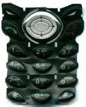
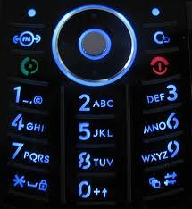
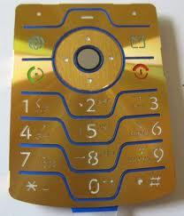
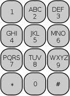
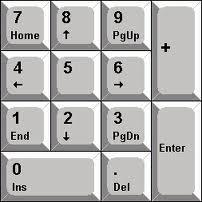
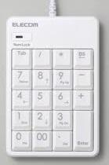
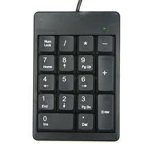
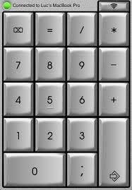
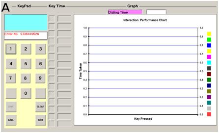
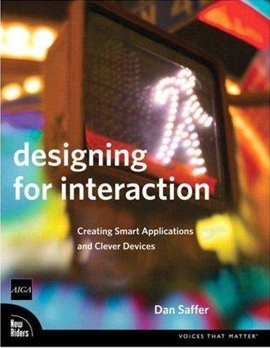

Mobile Key Pad Design - Size , Layout and Bevilling
The layout of a mobile keypad is very important when performing tasks like sending SMS or using a PDA phone. Basic numeric keypad in conjunction with T9 is efficient for typing SMS text messages but for sending emails you may need to look for a cell-phone with a QWERTY keypad with keys properly spaced and large enough to operate with both thumbs.
Some keypads may look good but are very difficult to use. Tiny keys look cool but may be an ergonomic nightmare. The best keypads have sufficient spacing between keys and pressing the keypad gives a positive haptic feedback. Some keys are very close to each other with a raised portion in the middle which is called bevilling. This allows your finger to feel each key which is required for properly using the keys.
In this experiment we will only study numeric keypad interaction design issue.
Observe the mobile keypads shown below
Do you observe any pattern? The location and sequence of keys are same in all layouts irrespective of their look and feel. Why is this pattern so popular? Is this a standard pattern? What would happen if we rearrange the keys into different positions?
Look at these numeric keypads used in industrial products
Did you notice that the sequence of rows is reversed with 7, 8 and 9 now at the top? Is this keypad as easy to use as the other one staring with 1, 2 and 3 at the top? What would be your answer? Find out by conducting this experiment.
The layout of a numeric keypad plays a vital role while inputting information. The ease of use, retention in memory, physical stress and error probability are some factors governing this layout.
This experiment will expose you to four different types of layouts. You will be interacting with each of them and finding the speed of entering a mobile number. At the end of the experiment you can infer on the best possible keypad layout configuration that facilitates error-free entry without having to sacrifice ease of use.

After performing this experiment
1.You will understand interaction efficiency of various numeric keypad layouts.2.You can compare different keypad designs based on the results obtained and graphs.3.You can inspect the effect of entering different mobile numbers using same layout.
Note:
Mobile users normally do not dial but store numbers in contact-list / phone-book.This experiment finds out the usability problems for novice, illiterate and elderly users, who rarely use phonebook to select numbers to dial.
Read and understand all the steps in the procedure given below before you start this experiment.
- 1.Select any one keypad layout by clicking on the layout itself.
2.A new window will open showing keypad , key time and graph area.

3.To go back to previous screen press EXIT button on the keypad itself.
4.The number which you dial on keypad will appear in blue display box on top of keypad.
5.SAVE key is non functional and is used for symmetry purpose only.
6.Begin dialing a 10 digit mobile number by clicking on the keys of the keypad. You need to press CALL key at end after dialing 10 digits.
7.Pressing CALL key at end will freeze the keypad and further dialing in prohibited.
8.The timer starts when any numeric key is clicked and keeps track of 10 digits dialed. Key press time will be displayed in the area next to it. The timer stops only after clicking CALL key at the end. So do not forget to press CALL key at the end.
9.Use CLEAR key to undo the last digit dialled while dialing a number. The timer and graph keeps recording the errors too.
10.Use print-screen at the end and save the experiment data as an image in a word file for future reference and analysis.
11.EXIT key should be used to go back to previous screen for selecting another keypad layout.

- 1.This experiment uses VB6.0 executable application under Windows 32 bit OS. Install Visual Basic 6.0 on your PC OR download required VB control to "C:/Windows/System32" by clicking on the link below …
Download VB Control
2. After you click on the Start Simulation link below a dialog will appear asking you to download executable ( exe ) application.
3.Download “keypad_4.0.exe” at appropriate location you wish and then open or execute the application.
4.Now click on the link below...
Start Simulation

Q1.Which keypad layout (A/B/C/D) took least time for dialing a number? Why?
Q2.Which keypad layout (A/B/C/D) took maximum time for dialing a number? Why?
Q3.Which keypad layout is more prone to errors?
Q4.By how much will the time to dial increase/decrease if the size of buttons is doubled in the layout?
Q5.Will the time to dial increase/decrease if the font-size of label on the buttons is increased?
Q6.Use laptop touchpad to interact instead of mouse and compare the results?
Q1.Make a list of 10 random mobile numbers and dial them in succession using same keypad layout. Find out how many numbers you could enter without errors and with errors and time to dial each. Find the reasons for errors. Try to relate this with the sequence of digits in the mobile number.
Q2.Do the entire experiment using laptop touchpad instead of mouse and compare it with the results obtained earlier using mouse. Can you draw any inferences? Is touchpad better than mouse while using a virtual keypad?

- http://www.yuiblog.com/blog/2007/10/02/challenges-of-interface-design-for-mobile-devices//a>
- http://en.wikipedia.org/wiki/Telephone_keypad
- http://arxiv.org/ftp/arxiv/papers/1007/1007.3633.pdf
- http://www.mobiface.com/
Refer to these books and links for additional knowledge
